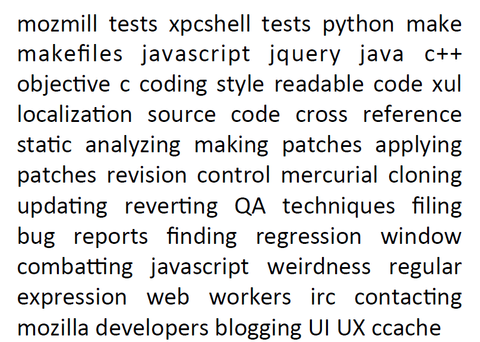

Contributing to the Mozilla Codebase
Sushant Hiray
,
@SushantHiray
or
hiraysushant@gmail.com
Contributing to the
Mozilla Codebase
Sushant Hiray, IIT Bombay, April 3, 2014
What are we going to cover?
Why code contribute?
Setting Up the Development Environment
Fixing Bugs
Why Code Contribute?
WORK ON REAL SOFTWARE
Get Credited
Impress People
Learn more about Software Engg.

Confirm to Coding Standards
Setting Up the Dev. Environment
Visit :
CodeFirefox Video Tutorial
Getting the Firefox Source Code
Visit :
CodeFirefox Tutorial
Fixing Bugs For Mozilla
Steps: Fixing Bugs For Mozilla
Select a Mozilla Product
Know Your Tools
Find and Fix Bugs and
Show Off !!
Select a Mozilla Product
Mozilla Products:
Firefox
Firefox for Desktop
Firefox for Android
Firefox for Metro
Firefox OS
Thunderbird
Seamonkey
Mozilla Services
And many more...
Know Your Tools!
IRC
Mailing Lists
Mozilla Developer Network (MDN)
Mercurial
MXR
Mach
Bugzilla
Internet Relay Chat (IRC)
IRC Chat Client - Chatzilla, XChat....
irc.mozilla.org
#introduction, #india
Mailing Lists
https://lists.mozilla.org
Mozilla India Community - community-india@lists.mozilla.org
Mozilla Developer Networks (MDN)
https://developer.mozilla.org
Treasure Trove of Documentation of the Open Web
Mercurial
Cross-platform, distributed version control tool
hg is the Mercurial command-line tool, Hg being the chemical symbol for the element mercury.
MXR
http://mxr.mozilla.org
Cross reference designed to display the Mozilla source code
Search the source code for your keywords
Mach
German word for 'do'
Command-line interface to build source code and run tests
Bugzilla
http://bugzilla.mozilla.org
Web-based Bug Tracker | Mozilla Bug Database
Find, Fix and File Bugs here
Find Bugs
Bugs Ahoy!
(Developed by Josh Matthews)
Lists all 'Good First Bugs'
Filter Bugs by Components/Language
Bugzilla
Steps: Fix Bugs
Show your interest
Research and Understand
Write Code
Upload Patch
Loop untill you get a 'r+'
Example Bug that I had fixed !!
Bugzilla
Important Online Resources
MDN Article on Getting Started
Find Mentored at Bugs Ahoy
Video Tutorials on CodeFirefox
About IRC
Thanks And...
Sushant Hiray
@SushantHiray
+sushanthiray
sushant-hiray.in/talks/
 Sushant Hiray, IIT Bombay, April 3, 2014
Sushant Hiray, IIT Bombay, April 3, 2014
Sushant Hiray, IIT Bombay, April 3, 2014
Sushant Hiray, IIT Bombay, April 3, 2014